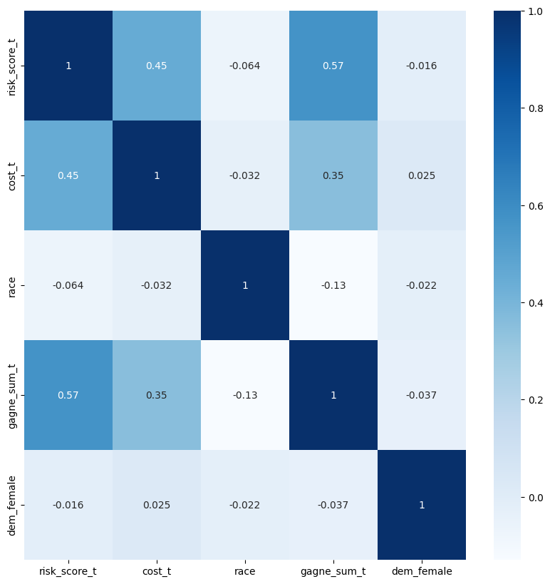
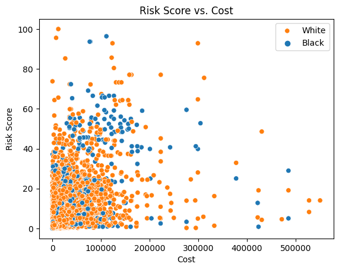
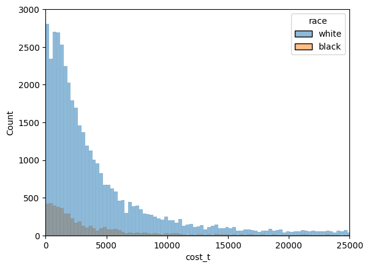
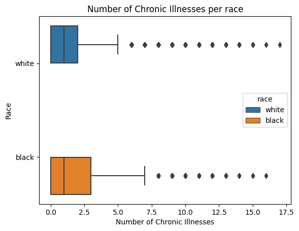
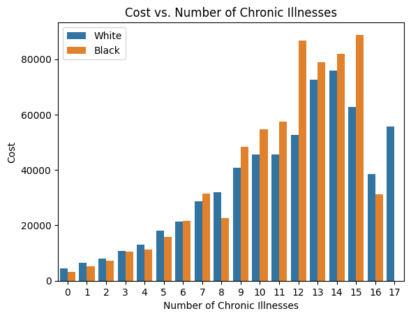
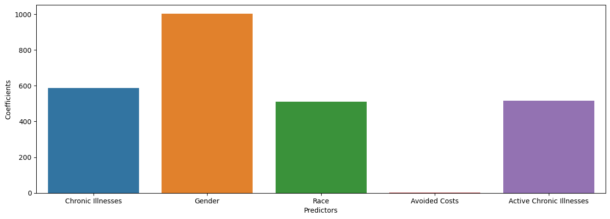
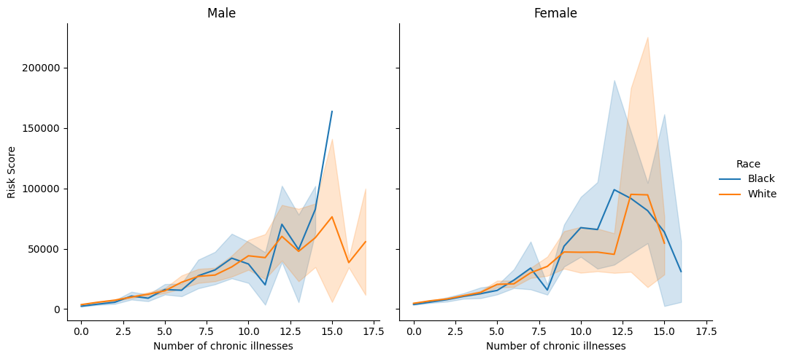

import pandas as pd
from matplotlib import pyplot as plt
import numpy as np
import seaborn as snsConsequences of Algorithmic Bias
DH 140 Final Project
Date : 03/20/2023
Introduction
In this project, I will be taking a closer look at the topic of algorithmic bias. In a world where artificial intelligence technology continues to grow exponentially with time, addressing the concern of algorithmic bias may be informational to several minority cultures. To begin with, algorithmic bias is defined to be errors or unfair choices made by machine learning algorithms. These biases arise due to a variety of reasons, some include incorrect choice of predictor variables and biased training data.
The article “Dissecting Racial Bias in an Algorithm Used to Manage the Health of Populations” released by Science examines how an algorithm used in healthcare can perpetuate racial bias. The article focuses on an algorithm that is used to identify patients who may benefit from additional healthcare services or lower costs. The author dives deep into one specific algorithm used in the industry, which he found in his study to exhibit racial bias. It presented racial bias by assigning a higher risk score to White patients over Black patients, even though they had similar scores throughout the different variables the algorithm would use to determine health risk score. A description of the dataset and how it was obtained can be found under this link. The model is trained on 160 different independent variables, with the risk score being the target variable.
Some of the reasons as to why I chose this dataset to analyze include having a deeper understanding of algorithms that are racially biased, and determining if this algorithm in specific is racially biased. As a first generation student and person of color, taking a closer look at the data and how this algorithm works will help me understand how algorithms can be not only racially biased, but could lead inaccurate decisions and outcomes that may lead to people of color have immense disadvantages in several aspects of life, not only the health care system.
Therefore, with this data set, I will take a high level overview of analysis to explore how risk scores are being assigned to patients. Specifically, I will try to answer the question: What factors could make this algorithm racially biased? How is it affecting patients of color? Does this have a long term effect on patients of color?
I will try to answer this question beginning with an exploratory data analysis of the data set. After getting more insight into the data and determining which variables can be useful in predicting risk score for a patient, I will try to apply a machine learning model (linear regression) which will show me how well it performs with the variables selected and the weight of each variable on predicting the risk score of a patient. Also, they measure risk score through the total of medical expenses variable (cost_t). Therefore, the algorithm is trained with cost_t as the dependent or target variable.
Methods
Exploratory Data Analysis
health_risk = pd.read_csv('data_new.csv')health_risk.shape(48784, 160)Since we have a great amount of predictor variables that are trained in this machine learning algorithm, let us take a closer look at some of the general variables in this dataset to determine which variables could greatly affect a patient’s risk score. Variables such as:
- COST_T: The patient’s total medical costs.
- RACE: The patient’s self-reported race. Data only includes Black/White patients
- GAGNE_SUM_T: The total number of chronic illnesses presented by the patient within the study period.
- DEM_FEMALE: This is an indicator if the patient is a female or not. 1 for female, 0 for male
- RISK_SCORE_T: This is the score given to a patient based on the algorithm.
For more information on different variables, a data dictionary is available provided in the link from earlier.
general_pred = ['risk_score_t', 'cost_t', 'race', 'gagne_sum_t', 'dem_female']
health_general = health_risk[general_pred]health_general.shape(48784, 5)health_general = health_general.dropna()
health_general.shape(48784, 5)There are 48,784 patients represented as rows in the data, and 5 pieces of information about each patient represented as columns. We saw NaN values in some of the columns earlier when we first imported the data, but after passing the dropna function to our dataframe, we can see that there were no NaN values in our subset data frame. Let us do some exploratory data analysis now, specifically the correlation between the variables in a heat map.
# Change race column to binary or encode it from string to integers (1 White, 0 Black)
from sklearn.preprocessing import LabelEncoder
le = LabelEncoder()
health_general['race'] = le.fit_transform(health_general['race'])# correlation matrix heat map
plt.figure(figsize=(10,10))
sns.heatmap(health_general.corr(), cbar=True, annot=True, cmap='Blues')
plt.show()
The plot above is a heatmap which shows the correlations between each variable in our general subset data. Correlation can tell us the strength and relationship between each variable, and we want to see which variables have moderately strong correlations between each other. This is to take a closer look at each of those variables and see how they could affect the prediction of risk score for a patient.
From the heatmap, we will consider moderately strong correlation coefficients to have a correlation value of 0.35 or greater. We can see that our predictor (risk_score_t) has moderately strong correlations with number of chronic illnesses (gagne_sum_t) and patient’s total medical cost (cost_t). Also, we can see that the number of chronic illnesses has a moderately strong correlation with total medical cost for a patient. Let us take a closer look at these variables and see how they can affect the risk score prediction.
sns.scatterplot(data = health_general, x = 'cost_t', y = 'risk_score_t', hue = 'race')
plt.ylabel('Risk Score')
plt.xlabel('Cost')
plt.title('Risk Score vs. Cost')
plt.legend(labels=['White', 'Black'])
plt.show()
Based on the scatter plot of risk score vs. cost, we can see that patients’ risk score tends to, on average, go up as total cost of medical expenses by patients goes up. We can differentiate how race may be a variable to consider as well when evaluating risk score with cost, but let us take a better look at this difference with the next plot below.
# first we have to change race back to a categorical variable with categories "Black" and "White"
health_general['race'] = [int(i) for i in health_general['race']]
mapping = {1 : 'white' , 0 : 'black'}
health_general['race'] = health_general['race'].map(mapping)
health_general['race']
sns.histplot(data = health_general, x = 'cost_t', hue = 'race')
plt.xlim(0, 25000)
plt.ylim(0, 3000)
plt.show()
# value counts for each race
health_general['race'].value_counts()
white 43202
black 5582
Name: race, dtype: int64Even though the proportion of Black patients in this data set is less than White patients, we can see that there is a higher proportion of White patients having higher costs than Black patients. For example, since patients of White race seem to have higher total costs for overall medical expenses, what if these expenses are to be aligned with non-critical expenses such as plastic surgery? Race shows a sign that it may be a factor in predicting risk score.
Let us closely investigate race now with the number of illnesses per patient. Below I will show a boxplot to show the differences between both races.
grouped_race_illness = health_general.groupby(['race'])['gagne_sum_t'].mean()
sns.boxplot(data = health_general, y = 'race', x = 'gagne_sum_t', hue = 'race')
plt.xlabel('Number of Chronic Illnesses')
plt.ylabel('Race')
plt.title('Number of Chronic Illnesses per race')
grouped_race_illnessrace
black 2.055536
white 1.263900
Name: gagne_sum_t, dtype: float64
Based on the boxplot above, we can see that there is a difference in the average number of chronic illnesses of patients that are Black and White. The average number of chronic illnesses for Black patients is higher than of White patients. Also, we can see that the Black patient’s 75th-100th percent quartile range is larger than the White patient’s 75th-100th percent quartile in the number of chronic illnesses. This shows another sign as to how these two variables (race and number of chronic illnesses) may affect the risk score of a patient. Also, from the point made earlier with White patients having higher costs than Black patients, how could they have higher costs if on average Black patients have a higher average number of chronic illnesses? We will investigate this question once we have all of our variables selected for our model to fit.
sns.barplot(data = health_general, y = 'cost_t', x = 'gagne_sum_t', hue = 'race', errorbar = None)
plt.ylabel('Cost')
plt.xlabel('Number of Chronic Illnesses')
plt.title('Cost vs. Number of Chronic Illnesses')
plt.legend(labels=['White', 'Black'])
plt.show()
Taking a closer look at our last two variables that have a moderately strong correlation (Cost and number of chronic illnesses) we can see that White patients on average have higher medical costs than Black patients up to a total of nine chronic illnesses. However, we see a change past 9 chronic illnesses where we see the total cost of medical expenses for Black patients is greater than the total cost of White patients. However, there is a lot of variation between both races and the confidence interval after nine chronic illnesses has a much wider range of costs (on some of the bins, White patients have higher costs than Black patients). We removed this from the plot because it does not seem fit to show the difference between cost prices and number of chronic illnesses in the first 9 points of number of chronic illnesses.
After performing a general exploratory data analysis, I will move on to select the features for my model. In respect to my model, I will perform linear regression on the variables I select. Specifically, I will have the total cost of medical expenses as my dependent variable (target variable), and my independent variables will be selected in my next section that will discuss feature selection.
Analysis
Feature Selection
Before I begin to model, I will perform a systematic feature selection to select the variables for my model. Since there are 160 independent variables in my model, finding the best variables for my model through an automated function will make this process extensive. Therefore, I will select variables that are the most general variables to the algorithm’s model, and will move forward to apply a systematic feature selection in which I will choose the best variables that give me the best average cross validation score with our model. We would like to select the model with the highest cross validation score because it will give me a rough idea as to which variables the model best performs on with unseen data from our training dataset.
Having mentioned the training dataset, I will split my data into training and test dataset. This training dataset will train my model with this data, and we will try to predict scores with the test set to determine how well our model performed. Also, as mentioned in the introduction, we will be using total medical costs (cost_t) as our dependent variable and the rest will be our potential independent variables for our model.
import sklearn
from sklearn import preprocessing
from sklearn import linear_model
from sklearn import model_selection
from sklearn.model_selection import train_test_split
from sklearn.linear_model import LinearRegression
from sklearn.model_selection import cross_val_score
from sklearn.metrics import accuracy_scoreThe variables I will be selecting to model with are the general variables from my exploratory data analysis (‘race’, ‘gagne_sum_t’, ‘dem_female’), and I selected three other variables that may have a potential in affecting risk score (‘cost_avoidable_t’, ‘gagne_sum_tm1’, ‘program_enrolled_t’). Below I will provide a definition for each:
- COST_AVOIDABLE_T: Total cost of avoidable medical expenditures.
- GAGNE_SUM_TM1: Total number of active illnesses.
- PROGRAM_ENROLLED_T: Indicator for patients enrolled in the program or not.
To begin with, I will create a cleaning function that will clean my dataset with the given columns I pass it to the function. This will clean my data only on the columns I want to subset from the dataset.
# Let us select the general columns that we will use and apply a cleaning function that will clean our data
# we also want to encode variables that are categories into integers
health_risk = pd.read_csv('data_new.csv')
cols = ['cost_t','gagne_sum_t', 'dem_female', 'race',
'cost_avoidable_t', 'gagne_sum_tm1', 'program_enrolled_t']
def clean_data(df, cols):
df = df[cols]
df = df.dropna()
df['race'] = le.fit_transform(df['race'])
return df
health_risk = clean_data(health_risk, cols)
health_risk.head()| cost_t | gagne_sum_t | dem_female | race | cost_avoidable_t | gagne_sum_tm1 | program_enrolled_t | |
|---|---|---|---|---|---|---|---|
| 0 | 1200.0 | 0 | 0 | 1 | 0.0 | 0 | 0 |
| 1 | 2600.0 | 3 | 1 | 1 | 0.0 | 4 | 0 |
| 2 | 500.0 | 0 | 1 | 1 | 0.0 | 0 | 0 |
| 3 | 1300.0 | 0 | 1 | 1 | 0.0 | 0 | 0 |
| 4 | 1100.0 | 1 | 1 | 1 | 0.0 | 1 | 0 |
health_risk.shape(48784, 7)After subsetting and cleaning my data, we can now move forward with splitting my data into train/test sets and doing a systematic feature selection. Ideally, we would be keeping our variables from the exploratory data analysis to fit our model, and will select the other three variables if they increase our overall cross validation scores. We will create the different combinations for the columns we would like to subset from our training data and model with. Since I will be keeping the variables from my exploratory data analysis in the list of combinations, this leaves us with a total of 8 list combinations to see which subset of variables will give us the best mean cross validation score.
# setting seed for reporducibility and apply train/test function to split data
np.random.seed(1234)
health_train, health_test = train_test_split(health_risk, test_size = 20)# function to calcualte mean cross validation score from
def cv_scores(cols):
print("training with columns " + str(cols))
model = LinearRegression()
return cross_val_score(model, health_train[cols], health_train['cost_t'], cv = 5).mean() # column combinations to see which variables give the greatest mean cross validation score when modeling training data
column_comb = [['gagne_sum_t', 'dem_female', 'race', 'cost_avoidable_t', 'program_enrolled_t', 'gagne_sum_tm1'],
['gagne_sum_t', 'dem_female', 'race', 'gagne_sum_tm1', 'program_enrolled_t'],
['gagne_sum_t', 'dem_female', 'race', 'cost_avoidable_t', 'program_enrolled_t'],
['gagne_sum_t', 'dem_female', 'race', 'cost_avoidable_t', 'gagne_sum_tm1'],
['gagne_sum_t', 'dem_female', 'race', 'cost_avoidable_t'],
['gagne_sum_t', 'dem_female', 'race', 'gagne_sum_tm1'],
['gagne_sum_t', 'dem_female', 'race', 'program_enrolled_t'],
['gagne_sum_t', 'dem_female', 'race']]
for i in column_comb:
score = cv_scores(i)
print("CV score is " + str(np.round(score, 3)))
training with columns ['gagne_sum_t', 'dem_female', 'race', 'cost_avoidable_t', 'program_enrolled_t', 'gagne_sum_tm1']
CV score is 0.706
training with columns ['gagne_sum_t', 'dem_female', 'race', 'gagne_sum_tm1', 'program_enrolled_t']
CV score is 0.129
training with columns ['gagne_sum_t', 'dem_female', 'race', 'cost_avoidable_t', 'program_enrolled_t']
CV score is 0.705
training with columns ['gagne_sum_t', 'dem_female', 'race', 'cost_avoidable_t', 'gagne_sum_tm1']
CV score is 0.706
training with columns ['gagne_sum_t', 'dem_female', 'race', 'cost_avoidable_t']
CV score is 0.705
training with columns ['gagne_sum_t', 'dem_female', 'race', 'gagne_sum_tm1']
CV score is 0.126
training with columns ['gagne_sum_t', 'dem_female', 'race', 'program_enrolled_t']
CV score is 0.129
training with columns ['gagne_sum_t', 'dem_female', 'race']
CV score is 0.126Based on the scores we received above, we can see that our model performed best with the columns - ‘gagne_sum_t’, ‘dem_female’, ‘race’, ‘cost_avoidable_t’, ‘gagne_sum_tm1’. The model does not differ much as compared to two other lists of variable combinations, but we will pick this set because it has the least variables. We do this to make our model less complex. We will move forward with fitting our model with these variables since they score best in our systematic feature selection.
Modeling
Let us now create our X and y for train/test to be able to fit our model with the linear regression function.
# creating independent and dependent variables
cols = ['cost_t', 'gagne_sum_t', 'dem_female', 'race', 'cost_avoidable_t', 'gagne_sum_tm1']
health_train = health_train[cols]
health_test = health_test[cols]
X_train = health_train.drop('cost_t', axis = 1)
y_train = health_train['cost_t']
X_test = health_test.drop('cost_t', axis = 1)
y_test = health_test['cost_t']We will now fit our training data to our model and display the coefficient of determination scores.
# fit data to linear regression model
LR = linear_model.LinearRegression()
LR.fit(X_train, y_train)
print(LR.score(X_train, y_train), LR.score(X_test, y_test))0.7079527773610754 0.9266021681495551Based on the results, our model did pretty well on the testing data set. Even though we did not get as high of a score in our training set, this shows that our model is not overfitting the data. We can see this by getting a lower training score than our test score. This indicated that our model is able to generalize well to new and unseen data (testing data).
Results
We will now take a closer look at the results of our model, specifically our coefficeints. We want to see which variables contribute most to our model in predicting risk score.
# get coefficients from fit model
LR.fit(X_train, y_train).coef_array([ 587.45140809, 1002.14821293, 509.748747 , 1.19313914,
514.53466781])# create table to clearly show results
results = {'Predictors' : ['Chronic Illnesses', 'Gender', 'Race', 'Avoided Costs', 'Active Chronic Illnesses'],
'Coefficients' : [ 587.45140809, 1002.14821293, 509.748747, 1.19313914, 514.53466781]}
results_df = pd.DataFrame(results)
results_df| Predictors | Coefficients | |
|---|---|---|
| 0 | Chronic Illnesses | 587.451408 |
| 1 | Gender | 1002.148213 |
| 2 | Race | 509.748747 |
| 3 | Avoided Costs | 1.193139 |
| 4 | Active Chronic Illnesses | 514.534668 |
plt.figure(figsize = (15,5))
sns.barplot(data = results_df, x = 'Predictors', y = 'Coefficients')
plt.show()
If we focus on the categorical variables, such as gender or race, we can see that they have a great deal in determining overall costs - which then correlates with overall risk score for a patient. For example, taking a look at race, we know that in our dataset 0 denotes Black and 1 White. This shows that if the patient is White, the model will automatically increase the overall cost of a patient by roughly 510 dollars (obtained this from the coefficient and multiplying it by 1). This explains why there may be an issue between Black and White patients getting different risk scores, even though they might have similar risk symptoms. Also, we can see the same for gender. If a patient is a female (denoted as 1 in our dataset) we see that they would automatically roughly get an additional 1002 dollars added to their total cost. This shows that females may, on average, get higher risk scores than males.
health_risk = pd.read_csv('data_new.csv')
f = sns.relplot(data = health_risk, x='gagne_sum_t', y='cost_t', col='dem_female', hue = 'race',
hue_order = ['black', 'white'], kind='line')
f.set_axis_labels( "Number of chronic illnesses", "Risk Score")
f.facet_axis(0, 0).set_title("Male ")
f.facet_axis(0, 1).set_title("Female")
f.legend.set_title("Race")
f.legend.texts[0].set_text("Black")
f.legend.texts[1].set_text("White")
plt.show()
Since gender and race are both variables that have a strong influence on cost/risk score, let us take a closer look at them and how they affect the number of chronic illnesses. We can see here, both races seem to have equal differences in risk scores. However, if we take a closer look at the first 10 chronic illnesses, we can see that White male patients seem to have a higher risk score over Black male patients. For females, we can say the same for the first 8 chronic diseases. However, there is much variation in this plot and cannot fully see a difference between both races.
Discussion
Based on our results, we can see that the gender and race coefficients have a significant factor in predicting cost. Since the risk score a patient receives is a function of the model’s prediction of the total medical costs which will be incurred by that individual, we can see that patients of Black race will receive a lower total for medical costs, which will ultimately lead to a lower risk score. This shows a huge disparity between White and Black patients, in which, if you are White, you can get a $579.90 expected extra medical cost, which can lead to a higher overall risk score. This leads to a systematic bias in the algorithm.
Therefore, if this model is still used to calculate risk scores for patients, Black patients are being held back to getting much better benefits since they have lower risk scores. This matter is not only affecting Black patients’ long term health, but also is a systemic issue that will continue to persist until it is solved. This algorithm will continue to have a long term effect on patients of color, and this is only one algorithm analyzed out of the many algorithms used in place in the healthcare industry.
Artificial intelligence will continue to exponentially grow with time, and we will have to adapt to it as well. However, algorithms that have bias, such as racial bias, must be trained with the proper data. The people behind building these models must now take a closer look at how these models are built and with what kind of data. For example, obtaining data from a representative and diverse population may be one way to solve algorithmic bias. Another way to help solve this issue is for the creators of the models to be explicit and transparent with their methods. With clear documentation on the algorithm, other people may be able to give another eye to the model and provide insights into the model if it has bias or not. Algorithmic bias is here to stay for the near future when building models, but we can minimize it by being aware of these models and understanding their functionality.